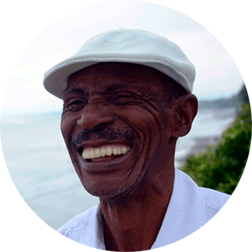

Semilla sin tierra es un documental web sobre la resistencia cultural que siguen manteniendo
las comunidades afrodescendientes en Colombia para que su patrimonio cultural inmaterial no desaparezca.
Este documental web narra la historia de Aura, Héctor, Francisco, Daira y Gualajo, cinco desplazados provenientes del Pacífico
colombiano que siguen conservando sus prácticas culturales a pesar de estar lejos de sus territorios ancestrales.
De igual forma, busca visibilizar la ausencia de
políticas públicas
dirigidas a la protección del patrimonio cultural
inmaterial de las comunidades desplazadas en Colombia, constituyéndose además, como un espacio de participación e intercambio
cultural. Aquí podrá conocer la riqueza cultural del Pacífico colombiano a través de sus danzas, su música, su gastronomía y
su tradición oral. Todos tenemos un patrimonio cultural inmaterial, compártenos algo del tuyo.
Participa.
¿Sabes cuál es el piano de la selva?
Conoce cómo a través de la música, una de las principales manifestaciones de la cultura del Pacífico colombiano,
la comunidad afro ha logrado resistir a la opresión y se ha convertido en una de las máximas expresiones de la
afrocolombianidad, al punto de ser reconocida por la Unesco en 2010 como Patrimonio Cultural Inmaterial de la Humanidad.
El currulao, el aguabajo, el alabao, el pregón, las zafras, el bunde y el porro chocoano,
son algunas muestras de la diversidad que tiene la comunidad afropacífica en cuanto a manifestaciones culturales
que conforman su Patrimonio Cultural Inmaterial. La música y el canto han sido los instrumentos más poderosos
para la construcción del imaginario afro desde que negros provenientes del África en condición de esclavitud,
llegaron a territorios colombianos e inundaron la costa pacífica y caribe con sus cantos e instrumentos que combinados
desembocaron en una forma de lucha, en una forma de resistencia.
Leer más...
Los rituales funerarios son uno de los escenarios en donde la comunidad afro repiensa su identidad y fortalece sus lazos
sociales. El tránsito hacia el más allá viene acompañado de cantos y alabaos tradicionales,
que distan mucho de la tradición occidental. El sonido de la marimba de chonta, junto al resonar del cununo,
el bombo y el guasá, acompañado del cantar de las cantadoras, conforman la banda sonora del rito fúnebre que despide al muerto.
El maestro Gualajo,
marimbero nacido en Guapí, conocido como el pianista de la selva,
es uno de los principales exponentes del folclor del Pacífico. Ha llevado el sonido de la marimba a recorrer el mundo
y ha logrado que esta manifestación de la cultura afro tenga visibilización en otros contextos.
“Para mí la marimba es mi alma”, dice el maestro, quien agradece a su padre el amor que inculcó por la marimba a él
y a sus hermanos. “Estamos ombligados a la marimba porque nacimos oyendo ese sonido, acompañado del bombo,
los cununos y el guasá”.
Durante mucho tiempo, varias comunidades del África no tuvieron acceso a la escritura e incluso estuvieron privadas
de escribir sus memorias cuando fueron esclavizadas en Europa y América. Gran parte de su sabiduría se preservó en la memoria
de sus gentes y en los mitos y cantos que de tanto repetirse se escuchan hasta el día de hoy en las costas del Pacífico
colombiano.
La tradición oral ha sido el instrumento más poderoso con el que las comunidades afro han reconstruido su historia
y preservado sus tradiciones.
Leer más...
En el caso de los afro pacíficos la oralidad se caracteriza por tener aspectos de culturas
africanas y de algunas estructuras literarias del castellano, sobre todo las
formas poéticas.
El cuentero, el decimero, los rezanderos y las cantaoras son figuras tradicionales que siguen transmitiendo los conocimientos
y los valores de una cultura ancestral que resistió al estigma y a la imposición cultural.
Nina S. de Friedemann, antropóloga que dedicó su vida al estudio de la cultura afrocolombiana,
afirma que la oralidad de estas comunidades está presente en sus rituales festivos, en sus fiestas sagradas,
en su gestualidad, en su danza y en la ética del vivir y del morir, de allí su importancia dentro del
Patrimonio Cultural Inmaterial.
¿Sabías que el río baila?
Hay días cuando mi cuerpo se convierte en una fiesta, y en la sangre se alborotan los negritos de mi ancestro.
Danza de palma y de viento, de culebra, tierra y río, calor de ron y aguardiente trasegando por el pecho,
quemándome las entrañas de noche de luna llena por fuera y por nacimiento.
María Teresa Ramírez, poeta afrocolombiana.
La danza afro del Pacífico colombiano se caracteriza por tener una marcada herencia africana inspirada en el ritmo
del tambor, la coordinación y el contacto con la tierra.
Acompañado de cantos están los bailes danzados con los que las comunidades invocan a sus ancestros,
celebran los nacimientos y despiden a sus muertos.
Leer más...
“A los africanos los trajeron desnudos para que supuestamente dejaran todo su legado, pero estaba esa historia corporal,
estaba esa memoria. La danza para mi es la resistencia que los afro han dejado en el mundo para no desaparecer,
no es solo movimiento.” cuenta Francisco Hinestrosa, maestro de danzas tradicionales del Pacífico de la Universidad Distrital.
Dentro de las principales danzas tradicionales de la región pacífica se encuentra el abozao,
una danza festiva originaria de la cuenca del río Atrato, basada en los ritmos de chirimía y en los juegos de incitación y
cortejo. Por otro lado está el currulao, considerada la danza más importante de las comunidades afropacíficas evoca las
protestas que los esclavizados les cantaban a sus opresores acompañadas de tambores y de una danza fuerte y armónica.
Finalmente está el bunde chocoano, una danza religiosa practicada principalmente por las comunidades del litoral Pacífico,
originaria de la región de Sierra Leona y danzada por los niños en los ritos fúnebres.
¿Sabías que se puede hablar con las plantas?
Para las comunidades afro de Pacífico la siembra tiene un valor ancestral más allá de ser una práctica productiva. A través de ella logran conectarse con la naturaleza y con el legado de sus ancestros.
En la época de la colonia existían unos espacios denominados kilombos dónde se reunían los mayores y trazaban planes para escapar de sus opresores. A través de los cultivos, abrían rutas para que quienes llegaran al kilombo conocieran el camino de escape sin describirlo con palabras.
Más allá de eso, los kilombos sirvieron para compartir conocimientos, reforzar lazos sociales a través de la siembra y realizar ritos curativos para el cuerpo y el alma a través de las plantas.
Leer más...
Las hierbas de azotea, son algunas de las plantas más importantes de la gastronomía del Pacífico. Su sabor exótico y su forma de cultivo ancestral las hacen vitales a la hora de obtener los sabores característicos. De igual forma, hierbas como el cilantro cimarrón y la ruda tienen propiedades curativas en las que las comunidades confían antes de ir a un médico tradicional.
Daira Quiñones, una tumaqueña que ha sembrado toda su vida afirma que la siembra es una de las prácticas más importantes y beneficiosas de su cultura. “Para mí la siembra es una práctica transversal porque cada planta te puede generar bienestar, salud, armonía y te puede equilibrar tu cuerpo. Cuando uno siembra uno se arraiga por lo que pienso que puede ayudar a reconstruir el tejido social que la guerra ha afectado” cuenta Daira.
Tradición culinaria
El Pacífico colombiano es una región de cocineros innatos. De generación en generación,
se ha ido transmitiendo el saber ancestral de una cocina llena de sabores alucinantes y herencia africana.
Hoy la gastronomía del Pacífico colombiano es considerada una de las mejores de país por su diversidad de ingredientes
y su esencia tradicional.
Panguiería
En medio de las raíces descubiertas de los manglares del Pacifico colombiano transcurre la panguiería.
Pastel de Piangua
Cuando baja la marea, las mujeres salen a recolectar la piangua con la que se preparan varios de los platos típicos
de la región.
Ají dulce del pacífico
Tradicionalmente se prepara con ají criollo, cilantro cimarrón, orégano, poleo y albahaca morada.
Ensalada verde de pescado
Dentro de los platos tradicionales de la región pacífica están las ensaladas de pescado
preparadas con hierbas de azotea y acompañadas de calamar, camarón, langostinos o atún fresco.
Muelas de cangrejo en leche de coco y hierbas de azotea.
Las hierbas de azotea son consideradas parte de los secretos de la gastronomía del Pacífico.
Su sabor y su forma de cultivo ancestral las hacen vitales dentro de esta tradición culinaria.
Sopita de camarón
Tradicionalmente se prepara con leche de coco, pasta de chontaduro, ají dulce y hierbas de azotea.
Bravo frito
La actividad pesquera en el Pacífico colombiano es uno de los principales ingreso de sus pobladores.
Gran parte de la pesca se lleva a cabo de forma artesanal, a través de métodos como la línea de mano
y el espinel.
Ceviche de sardinata
Tradicionalmente se prepara con filete de sardinata, cilantro cimarrón, naranja agria,
naranja dulce y pimentón.
Cocadas
Las cocadas en el pacifico colombiano son pequeñas porciones de dulce hechas con coco y melaza de panela.
Sobre su existencia se tiene registro desde las crónicas de Indias del siglo XVIII en las que se les llamaba
“celebradas cocadas de las Indias”.
Bravo, arroz de coco y patacón
El uso del coco en la cocina pacífica tiene su origen en las técnicas gastronómicas africanas.
El arroz de coco se acompaña con patacones, pescado y ensalada
y suele suavizar el sabor de platos picantes y condimentados.
Cecilia Angulo
Cecilia Angulo es una cociera tradicional del Pacifico colombiano.
A sus ocho años su madre le enseñó a cocinar en Buenaventura.
Hoy es la sub chef de Misia, un restaurante bogotano conocido por servir platos típicos de la región pacífica y caribe.
Conoce más de su historia.
Personajes
Aura Carreño
Aura es una joven afro de 20 años que a pesar de haber nacido en Bogotá emprendió la búsqueda de su identidad afro
a través del patrimonio cultural inmaterial de las comunidades de Tumaco, Nariño y Patía, Cauca; regiones desde las
que se desplazaron sus padres hace más de 25 años. Aura narra los choques identitarios que vivió a lo largo de su infancia y
la forma en que su vida cambió cuando conoció su historia ancestral y las diferentes manifestaciones culturales afro.
Daira Quiñones
Daira es cantora tradicional y directora de la Red Amdae, una organización comunitaria que trabaja por la
conservación cultural de la comunidad afro en Bogotá y el sostenimiento de la población desplazada.
Daira lideró una titulación colectiva de tierra en Tumaco por lo que fue amenazada por grupos armados y tuvo que salir
desplazada hacia Bogotá hace 17 años. Ella narra la historia de su desplazamiento y de su trabajo con Amdae y la forma
como ha resistido a todas estas situaciones a través su historia y su cultura.

Maestro Gualajo
El Maestro Gualajo es un músico tradicional del Pacífico sur colombiano, reconocido principalmente por ser uno de los
marimberos más importantes del país. Elegido para el premio Vida y Obra del Ministerio de Cultura en 2013,
que reconoce hace más de una década a los artistas de mayor y mejor trayectoria del país.
El Maestro cuenta su historia personal con la marimba y habla de la importancia y la particularidad de este instrumento
dentro del folclor del Pacífico sur.
Héctor Tello Tenorio
Héctor es el administrador de las casas para los derechos afro de las localidades de Ciudad Bolívar y Usme.
Proveniente de Tumaco, Nariño, Héctor llegó hace 17 años a Bogotá desplazado por el conflicto armado que había en su región.
Actualmente hace parte de Perlas del pacífico, una organización que busca atender a la población afro desplazada y promover
en las nuevas generaciones la música y la danza folclórica, así como los valores ancestrales de la región Pacífica.
Francisco Hinestrosa
Francisco es bailarín y maestro de danza folclórica en distintas universidades de Bogotá.
Oriundo de Quibdó, Chocó llegó a Bogotá a sus 18 años buscando un mejor futuro y hoy tiene su propia compañía de danza.
A pesar de estar lejos de su tierra, Francisco no pierde su cultura y sigue cultivando su ancestralidad, según cuenta,
a través de la danza tradicional que aprendió de los mayores cuando niño.
Juan de Dios Mosquera
Juan de Dios Mosquera es el fundador y director del Movimiento Nacional Cimarrón.
Un movimiento que lucha por los derechos humanos y culturales de las comunidades afrocolombianas.
Es historiador y tiene una maestría en sociología de la Universidad Iberoamericana de México y ha dedicado su vida
a los estudios sobre la cultura y la historia de África.